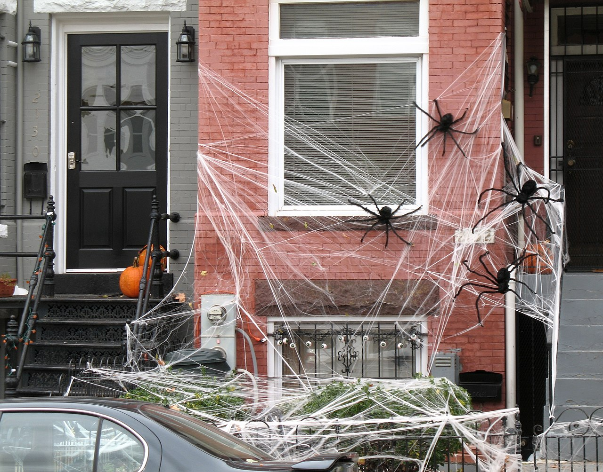

Halloween
Spis treści
Czym jest Halloween?
Historia
Symbole
Czym jest Halloween?
Halloween zwyczaj związany z maskaradą, obchodzony w wielu krajach w wieczór 31 października. Odniesienia do Halloween są często widoczne w kulturze popularnej, głównie amerykańskiej.
Halloween najhuczniej jest obchodzony w Stanach Zjednoczonych, Kanadzie, Irlandii, Australii i Wielkiej Brytanii. Mimo że dzień nie jest świętem urzędowym, cieszy się po święcie Bożego Narodzenia największą popularnością. Święto Halloween w Polsce pojawiło się w latach 90. XX w.
Głównym symbolem święta jest wydrążona i podświetlona od środka dynia z wyszczerbionymi zębami. Inne popularne motywy to duchy, demony, zombie, wampiry, czarownice, trupie czaszki, nietoperze, czarne koty, pajęczyny, Wilkołaki itp.

Historia

Dokładna geneza Halloween nie jest znana. Może nią być rzymskie święto na cześć bóstwa owoców i nasion (Pomony) albo celtyckie święto na powitanie zimy.
Według tej drugiej teorii Halloween wywodzi się z obchodzonego w Europie północnej święta z okazji końca jesieni a początku zimy, znanego na terenach irlandzkich jako Samhain („koniec lata”), walijskich jako Nos Galan Gaeaf („wieczór zimowy”), anglosaskich jako Blodmonath („krwawy miesiąc”), nordyckich jako „zimowe noce”.
Z jednej strony był to czas radowania się minionymi zbiorami oraz powrotem bliskich do domów, z drugiej strony pojawiało się widmo zimy – czasu zmagań z głodem, chłodem i niedostatkiem
światła słonecznego – w północnej Europie to zimą i wczesną wiosną umierało najwięcej ludzi.
Symbole

Jack-o'-lantern
Jack-o'-lantern to halloweenowa lampa zrobiona z wydrążonej dyni. W środku wydrążonej dyni z wyciętymi otworami stawia się świecę. Z okazji święta Halloween tradycją stało się stawianie w oknie lub w drzwiach domostwa latarni.
Wydrążona dynia ze światełkiem w środku dla irlandzkich chłopów oznaczała błędne ogniki uważane za dusze tragicznie zmarłych. W czasie tajemniczych obrzędów miano uwalniać ludzkie dusze z ciał czarnych kotów i nietoperzy.
Obecnie w wyeksponowanych miejscach domów umieszcza się wydrążone i podświetlone od wewnątrz dynie z wyciętymi kształtami różnych postaci oraz, w zależności od wyobraźni domowników, imitacje ludzkich czaszek, szkieletów, manekinów znanych postaci z horrorów itp.
>